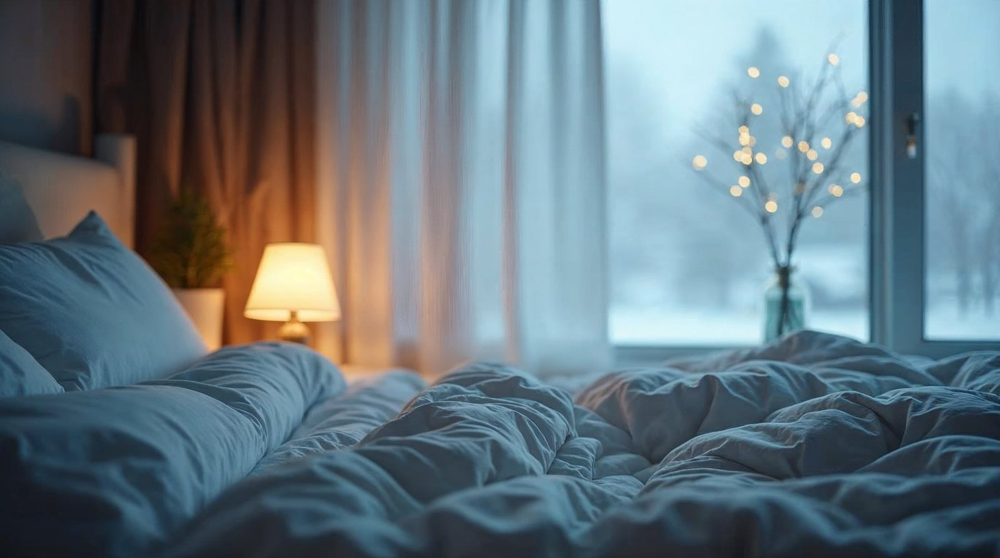
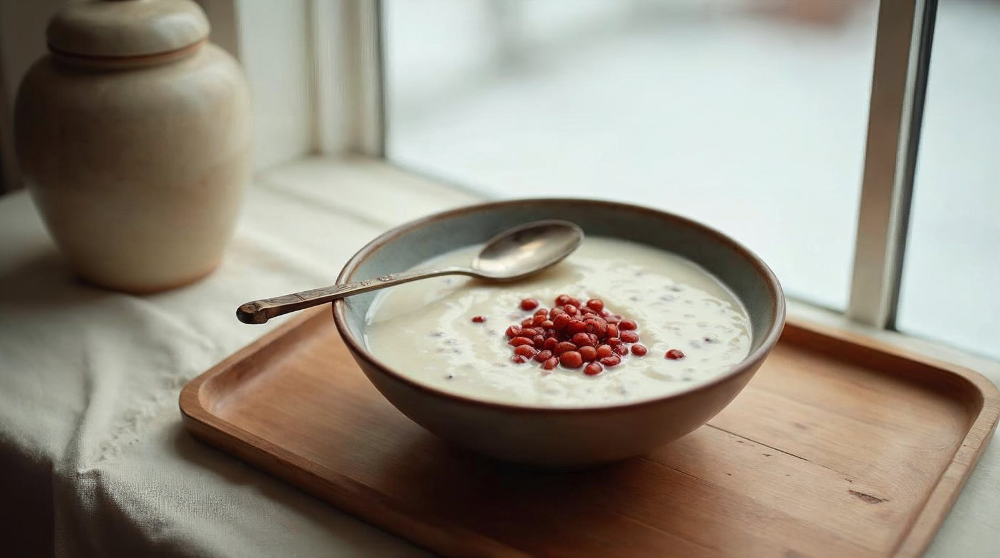

이종호 한의사 감수좋은꿈참사랑한의원 대표원장 (한의사 면허번호 19769)발행 2026-11-22 · 수정 2026-11-27
이 글의 차례
- 왜 이런 불편이 생길 수 있나요
- 이불 밖이 유난히 힘든 건 체온과도 관련이 있나요?
- 자주 하는 오해
- 겨울 늦잠과 다른 문제는 어떻게 구분하나요?
- 겨울 아침이 유난히 힘들게 느껴지는 생활도 있어요
- 예를 들면 이런 경우입니다
- 스스로 점검해 보세요
- 먼저 이렇게 여쭙니다
- 일상에서 먼저 해 볼 수 있는 것
- 아침 30분, 이렇게 보내 보세요
- 한의원에서 함께 살필 수 있는 경우
- 저녁 시간도 아침만큼 중요해요
- 얼마나 지켜보고, 언제 진료를 받을까요
- 처음 오시면 이렇게 살펴봅니다
- 침이나 한약은 어떤 경우에 생각하나요?
- 이렇게 기록해 오시면 상담이 쉬워집니다
- 이런 증상은 먼저 확인이 필요합니다
한겨울 아침에는 이불 밖이 춥고 바깥도 어두워 몸이 더 무겁게 느껴집니다. 해가 가장 짧은 동지 무렵은 몸의 리듬이 흔들리기 쉬운 때라 늦잠과 아침 무기력이 흔합니다. 늦게 일어나는 날이 이어지면 밤잠까지 밀리기 쉬워, 아침 환경부터 바꿔 보는 것이 좋습니다.
진료실에서 겨울만 되면 듣는 말이 있어요. "원장님, 알람을 세 개나 맞춰도 못 일어나겠어요." 그러니까 사실은, 이건 게을러서 생기는 일이 아니에요. 알람을 몇 개 맞추느냐보다 몸이 아침이라는 걸 알아차리게 해 주는 게 먼저거든요. 해가 늦게 뜨고 방이 차가운 계절에는 몸이 아침을 늦게 알아차리는 게 원래 그런 거거든요.
그래서 저는 겨울 아침이 힘들다는 분께 "더 일찍 자세요"부터 말씀드리지 않아요. 아침에 몸이 깨어날 신호를 어떻게 다시 만들어 줄지를 먼저 같이 보는 거예요.
왜 이런 불편이 생길 수 있나요
- 아침 햇빛은 몸을 깨우는 신호인데, 겨울에는 해가 늦게 떠 이 신호가 약해집니다.
- 실내외 온도 차가 커서 이불 밖으로 나오는 것 자체가 부담이 됩니다.
- 추워서 바깥 활동이 줄면 낮에 몸을 쓰는 양이 줄고 밤잠도 얕아지기 쉽습니다.
- 주말에 늦잠으로 몰아 자면 월요일 아침이 더 힘들어지는 순환이 생깁니다.
- 일어나자마자 누운 채 휴대폰부터 보면 몸이 깨어나는 시간이 더 늦어지기도 합니다.
몸 안에는 하루의 시작과 끝을 알려 주는 시계 같은 게 있어요. 이 시계는 아침 빛을 보면 "이제 하루 시작이구나" 하고 맞춰지는데, 겨울에는 그 신호가 늦고 약하게 들어와요. 출근 도장을 늦게 찍으면 퇴근도 늦어지듯, 아침이 밀리면 밤에 졸음이 오는 시각도 같이 밀리는 거죠.
여기서 두 가지를 나눠서 보셔야 해요. 늦게 일어나는 것과, 일어나도 몸이 안 깨는 것은 다른 얘기예요. 앞의 것은 기상 시각과 빛의 문제인 경우가 많고, 뒤의 것은 잠의 깊이나 몸의 온기, 아침 식사까지 함께 봐야 하는 경우가 많거든요.
왜인 줄 아세요? 같은 일곱 시간을 자도 밤새 춥게 웅크리고 잤거나 중간에 여러 번 깼다면, 몸은 쉰 시간이 모자란다고 느끼거든요. 그래서 저는 몇 시간 잤는지보다 어떻게 잤는지를 같이 여쭤봐요.
겨울에는 낮에 몸을 쓰는 양도 줄어요. 추우니까 걷는 거리가 짧아지고 집 안에 머무는 시간이 길어지잖아요. 낮에 몸을 덜 쓰면 밤에 잠을 끌어당기는 힘도 약해져서 잠이 얕아지고, 얕게 잔 다음 날 아침은 또 무거워지는 거예요. 그래서 겨울 아침 문제는 낮과 밤을 한 줄로 이어서 봐야 해요.
이불 밖이 유난히 힘든 건 체온과도 관련이 있나요?
네, 그런 경우가 많아요. 사람은 새벽부터 체온이 조금씩 오르면서 잠에서 깰 준비를 하거든요. 그런데 방이 차가우면 몸은 체온을 지키려고 이불 속에 더 머물고 싶어져요. 그래서 겨울엔 눈은 떴는데 몸이 안 따라오는 느낌이 드는 거예요.
그러니까 사실은 의지로 버티는 것보다 일어날 때 몸이 덜 춥게 해 주는 게 먼저예요. 기상 전에 난방이 돌도록 맞춰 두거나, 손 닿는 곳에 겉옷을 두는 작은 준비가 생각보다 큰 차이를 만들어요.
반대로 밤에 방을 너무 덥게 해 두면 잠이 얕아지고 새벽에 자주 깨기도 해요. 잘 때는 이불로 따뜻하게, 방은 너무 덥지 않게. 이 두 가지를 나눠서 생각하시면 돼요.
자주 하는 오해
- 겨울엔 원래 잠이 늘어나니 많이 잘수록 좋다고 생각하기 쉬운데, 누워 있는 시간이 길어지면 잠이 오히려 얕아지는 경우가 있어요.
- 알람을 여러 개 맞추면 일어나기 쉬울 것 같지만, 몇 분마다 깼다 잠들기를 반복하면 아침이 더 무겁게 느껴질 수 있어요.
- 아침에 커피를 마셔야만 깨어난다고 여기는 분이 많은데, 빛과 움직임으로 먼저 몸을 깨우고 커피는 그다음에 드셔도 늦지 않아요.
- 주말에 몰아 자면 피로가 가신다고 생각하지만, 월요일 아침이 더 힘들어지는 순환이 생기기 쉬워요.
겨울 늦잠과 다른 문제는 어떻게 구분하나요?
겨울 아침이 무거운 건 흔한 일이지만, 비슷해 보여도 따로 확인이 필요한 경우가 있어요. 아래처럼 나눠서 보시면 도움이 돼요.
- 겨울마다 기분이 가라앉고 좋아하던 일에 흥미가 줄며 단 음식이 당긴다면, 계절에 따라 마음이 함께 흔들리는 경우일 수 있어 기분 변화도 함께 봐요.
- 잠을 충분히 자도 낮에 계속 졸리고 코골이가 심하다는 말을 듣는다면, 잠자는 동안 숨이 막히는 문제가 숨어 있는지 수면 검사가 가능한 곳에서 확인해 보시는 게 좋아요.
- 추위를 유난히 타고 몸이 붓고 체중이 늘면서 피로가 이어진다면, 혈액 검사로 다른 원인이 없는지 확인해 보시는 게 먼저예요.
- 어지럽고 얼굴이 창백하며 계단만 올라도 숨이 차다면 빈혈 같은 원인이 없는지 살펴야 해요.
이런 경우가 아니고 해가 길어지는 봄이 오면 아침이 한결 가볍다는 분이라면, 계절 리듬의 영향이 큰 경우가 많아요. 그렇다고 봄까지 참고만 계실 필요는 없고요.
겨울 아침이 유난히 힘들게 느껴지는 생활도 있어요
모든 분이 그런 건 아니지만, 생활 모양에 따라 겨울 아침이 더 버겁게 느껴지는 경우가 있어요. 이런 생활이라면 기상 리듬을 조금 더 신경 써 주시면 좋아요.
- 해가 뜨기 전 출근하고 해가 진 뒤 퇴근해 하루 종일 바깥 빛을 거의 못 보는 생활
- 창문이 작거나 북향인 방에서 지내 아침에도 실내가 어두운 경우
- 밤늦게까지 공부나 일을 하고 아침 일정이 들쭉날쭉한 경우
- 저녁 약속이 잦아 잠드는 시각이 요일마다 크게 달라지는 경우
이런 분들은 아침 빛을 일부러 챙기는 것만으로도 하루의 시작이 달라진다고 말씀하시는 경우가 많아요.
예를 들면 이런 경우입니다
- 예를 들어 해 뜨기 전에 집을 나서야 하는 출근 시간이라면, 아침 빛을 볼 틈이 없으니 점심때 바깥에서 걷는 시간을 하루의 빛 신호로 삼아 보는 거예요.
- 예를 들어 평일에는 겨우 일어나고 주말에 정오까지 자는 경우라면, 주말 기상 시각을 평일과 한 시간 안쪽으로 맞추는 것부터 시작해요.
- 예를 들어 웃풍이 있는 방에서 자서 새벽에 추워 자주 깨는 경우라면, 잠의 시간보다 잠자리의 온도부터 손보는 게 먼저일 수 있어요.
스스로 점검해 보세요
- 평일과 주말의 기상 시각이 두 시간 넘게 차이 난다
- 일어나서 한 시간이 지나도 머리가 멍하다
- 아침에 눈을 뜨면 누운 채 휴대전화부터 본다
- 새벽에 추워서 깨는 날이 있다
- 겨울 들어 낮에 바깥에 나가는 시간이 크게 줄었다
- 아침을 거르는 날이 일주일에 사흘 이상이다
- 겨울만 되면 기분이 가라앉고 의욕이 준다
해당하는 항목이 여럿이라면 오실 때 표시해서 가져와 주세요. 어디부터 손댈지 정하는 데 도움이 돼요.

먼저 이렇게 여쭙니다
- 평소보다 일어나는 시각이 얼마나 늦어졌나요?
- 일어나도 한참 몸이 무겁고 졸린가요?
- 주말과 평일의 기상 시각 차이는 어느 정도인가요?
- 겨울 들어 아침 식사와 낮 활동량이 달라졌나요?

일상에서 먼저 해 볼 수 있는 것
- 평일과 주말의 기상 시각 차이를 한 시간 안쪽으로 두기
- 일어나자마자 커튼을 열거나 밝은 실내등 켜기
- 잠자리 옆에 겉옷과 양말을 두고, 타이머로 기상 전에 난방 켜 두기
- 따뜻한 물을 천천히 마시고 제자리에서 가볍게 몸 풀기
- 점심 무렵 10~20분이라도 밖에서 햇빛 보며 걷기
숙제는 하나만 드릴게요. 일어나는 시각만 매일 비슷하게 지켜 주세요. 잠드는 시각은 처음엔 들쭉날쭉해도 괜찮아요. 일어나는 시각이 자리 잡히면 저녁 졸음이 오는 시각도 따라오는 경우가 많거든요. 딴 건 하던 대로 편하게 하셔도 돼요.
그리고 아침 운동을 세게 하실 필요는 없어요. 한파 속에서 갑자기 뛰는 것보다, 해가 있을 때 천천히 오래 걷는 게 몸에 훨씬 부담이 적어요. 최대한 천천히, 대신 꾸준히요. 저도 겨울엔 점심때 잠깐이라도 밖을 걷는 걸로 리듬을 지키려고 하거든요.
아침 30분, 이렇게 보내 보세요
거창한 계획보다 순서를 정해 두는 게 도움이 돼요. 아래 순서는 하나의 예시예요. 다 하실 필요는 없고 할 수 있는 것만 골라서 해 보세요.
- 알람이 울리면 누운 채 손발을 쥐었다 펴고 발목을 몇 번 돌리기
- 일어나 앉아서 커튼을 걷거나 방 불을 가장 밝게 켜기
- 미지근한 물 한 컵을 천천히 마시기
- 창가에 서서 기지개를 켜고 목과 어깨를 천천히 돌리기
- 따뜻한 국이나 죽처럼 속이 편한 음식으로 가볍게 아침 먹기
몸은 갑자기 깨우는 것보다 단계를 밟아 깨울 때 덜 놀라요. 아침에 따뜻한 음식이 한 숟가락이라도 들어가면 속에서부터 하루가 시작된다는 신호가 가거든요.

한의원에서 함께 살필 수 있는 경우
- 아침에 몸이 무겁고 개운하지 않은 경우 잠의 깊이와 근육의 긴장 상태를 함께 살핍니다.
- 손발이 차고 겨울만 되면 기운이 유난히 떨어진다면 몸의 온기와 하루 활동량을 봅니다.
- 아침을 거르고 오전 내내 멍하다면 식사 시간과 소화 상태부터 짚어 봅니다.
좋은꿈참사랑한의원에서는 겨울 들어 달라진 잠과 생활을 들은 뒤, 진맥을 기본으로 하고 필요하다고 판단될 때 설진을 더해 몸 상태를 살피고 침이나 한약 상담 등 방법은 상태에 맞춰 고릅니다. 귀가 전에는 아침 기상 습관과 기록할 항목을 함께 정합니다.
아침 빛을 볼 때는 창문 너머보다 잠깐이라도 밖에 나가 보는 게 좋아요. 흐린 겨울날 바깥도 실내 조명보다는 훨씬 밝거든요. 쓰레기를 버리러 나가거나 집 앞 편의점까지 걸어가는 몇 분도 몸에는 하루가 시작됐다는 신호가 돼요.
저녁 시간도 아침만큼 중요해요
아침을 바꾸려면 전날 저녁도 같이 봐야 해요. 겨울엔 해가 일찍 져서 저녁이 길게 느껴지고, 그 긴 저녁을 밝은 화면 앞에서 보내기 쉽거든요. 그러면 몸은 아직 낮이라고 착각하고 잠드는 시각이 밀려요.
- 잠들기 한 시간 전부터 거실 조명을 한 단계 낮추기
- 저녁 늦게 소파에서 잠깐 조는 습관 줄이기
- 늦은 저녁 과식은 피하고, 배가 고프면 따뜻한 국물 정도로 가볍게
- 따뜻한 물로 씻는 건 잠들기 한두 시간 전쯤에
이렇게 저녁을 조용히 보내면 다음 날 아침 기상 시각을 지키기가 한결 수월하다는 분들이 많아요.
얼마나 지켜보고, 언제 진료를 받을까요
기상 시각과 아침 빛, 잠자리 온도를 바꾸면서 2주쯤 지켜보세요. 그래도 아침마다 몸이 천근만근이고 오전 내내 일이 손에 안 잡힌다면 그때는 혼자 애쓰지 마시고 진료를 받아 보세요.
특히 손발이 차고 소화가 더디고 겨울만 되면 기운이 뚝 떨어지는 분이라면, 잠만의 문제가 아니라 몸 전체의 온기와 기운을 함께 봐야 하는 경우가 많아요. 아픈 데만 보는 게 아니라 몸 전체를 보려는 거예요.
한의학에서는 아침에 유난히 몸이 무겁고 붓는 느낌, 손발이 찬 느낌, 소화가 더딘 느낌을 따로따로 보지 않아요. 몸의 온기와 순환, 소화가 서로 이어져 있다고 보거든요. 그래서 잠 이야기로 오셔도 배와 손발, 식사 이야기까지 같이 여쭤보는 거예요.
처음 오시면 이렇게 살펴봅니다
모든 분의 맥을 먼저 짚고 시작해요. 그다음 겨울 들어 일어나는 시각과 잠드는 시각이 어떻게 달라졌는지, 새벽에 깨는지, 손발이 찬지, 아침 식사와 소화는 어떤지 차례로 여쭤봐요.
필요하다고 판단되면 혀의 모양과 색을 보는 설진을 더하고, 목과 어깨가 굳어 있는지도 손으로 확인해요. 혈액 검사가 필요해 보이면 그 이야기도 함께 드려요.
방법은 상태에 맞춰 침이나 한약 상담 가운데에서 같이 정해요. 한약을 생각하실 때는 지금 드시는 약을 먼저 확인하고, 처방받은 약은 처방한 의사와 상의 없이 줄이거나 끊지 않아요. 보통은 한 달쯤 지켜보고 다시 판단하는 경우가 많아요.
침이나 한약은 어떤 경우에 생각하나요?
아침마다 목과 어깨가 뻣뻣하게 굳어 있고 자고 나도 몸이 쉬지 못한 느낌이라면, 굳은 곳의 긴장을 살피며 침을 생각해 볼 수 있어요. 아픈 곳만이 아니라 잠을 방해하는 긴장이 어디에 쌓였는지 같이 보는 거예요.
손발이 차고 겨울만 되면 기운이 처지며 소화까지 더딘 분이라면 한약 상담을 함께 이야기하는 경우가 있어요. 드시는 약과 건강식품을 먼저 확인하고, 임신 중이거나 가능성이 있으면 꼭 먼저 알려 주세요. 그런 경우엔 산부인과와 상의하시도록 안내해요.
한약을 드시다가 속이 불편하거나 몸에 맞지 않는 느낌이 들면 복용을 멈추고 연락 주세요. 그리고 한약을 드시는 동안에는 술은 드시지 않는 걸로 해 주세요.

이렇게 기록해 오시면 상담이 쉬워집니다
- 1~2주 동안 일어난 시각과 개운한 정도
- 주말과 평일의 기상 시각 차이
- 낮에 바깥에 나간 시간
- 기운이 특히 없던 날과 그날의 잠
개운한 정도는 0부터 10까지 숫자 하나로 적으시면 충분해요. 아침에 일어나서 바로 한 줄만 적는 거예요. 2주쯤 모이면 어떤 날 아침이 가벼웠는지, 전날 무엇이 달랐는지가 보이는 경우가 많거든요.
이런 증상은 먼저 확인이 필요합니다
- 낮에 참기 어려운 졸음이 있거나 운전 중 졸린 경우
- 몇 주 넘게 의욕이 크게 줄었거나 스스로를 해칠 생각이 드는 경우(☎ 109로 바로 연락하세요)
이런 신호가 있으면 한의원보다 가까운 병원이나 응급실을 먼저 찾으세요.
기록은 완벽할 필요가 없어요. 빠진 날이 있어도 괜찮아요. 매일 같은 시각에 휴대전화 메모에 한 줄 남기는 정도면 충분하고, 기록을 들고 오시면 저는 그 안에서 반복되는 모양을 같이 찾아드릴게요.
겨울 아침이 무거운 건 몸이 계절을 따라가느라 그런 경우가 많아요. 그러니 자신을 너무 탓하지 마시고, 아침 빛과 기상 시각부터 같이 맞춰 봐요. 궁금한 건 오셔서 편하게 물어보세요.

여쭙는 것
- 평소보다 일어나는 시각이 얼마나 늦어졌나요?
- 일어나도 한참 몸이 무겁고 졸린가요?
- 주말과 평일의 기상 시각 차이는 어느 정도인가요?
생활에서 해 볼 것
- 평일과 주말의 기상 시각 차이를 한 시간 안쪽으로 두기
- 일어나자마자 커튼을 열거나 밝은 실내등 켜기
- 잠자리 옆에 겉옷과 양말을 두고, 타이머로 기상 전에 난방 켜 두기
한의원에서 함께 살필 것
- 아침에 몸이 무겁고 개운하지 않은 경우 잠의 깊이와 근육의 긴장 상태를 함께 살핍니다.
- 손발이 차고 겨울만 되면 기운이 유난히 떨어진다면 몸의 온기와 하루 활동량을 봅니다.
- 아침을 거르고 오전 내내 멍하다면 식사 시간과 소화 상태부터 짚어 봅니다.
먼저 확인이 필요한 신호
- 낮에 참기 어려운 졸음이 있거나 운전 중 졸린 경우
- 몇 주 넘게 의욕이 크게 줄었거나 스스로를 해칠 생각이 드는 경우(109로 바로 연…
한눈에 보는 표
| 구분 | 핵심 |
|---|---|
| 여쭙는 것 | 평소보다 일어나는 시각이 얼마나 늦어졌나요? 일어나도 한참 몸이 무겁고 졸린가요? |
| 생활에서 해 볼 것 | 평일과 주말의 기상 시각 차이를 한 시간 안쪽으로 두기 일어나자마자 커튼을 열거나 밝은 실내등 켜기 |
| 한의원에서 함께 살필 것 | 아침에 몸이 무겁고 개운하지 않은 경우 잠의 깊이와 근육의 긴장 상태를 함께 살핍니다. 손발이 차고 겨울만 되면 기운이 유난히 떨어진다면 몸의 온기와 하루 활동량을 봅니다. |
| 먼저 확인이 필요한 신호 | 낮에 참기 어려운 졸음이 있거나 운전 중 졸린 경우 몇 주 넘게 의욕이 크게 줄었거나 스스로를 해칠 생각이 드는 경우(109로 바로 연락하세요) |
자주 묻는 질문
추운 날에는 더 자도 괜찮은가요?
가끔은 괜찮지만 늦게 일어나는 날이 이어지면 밤잠이 밀릴 수 있어, 평소 기상 시각에서 크게 벗어나지 않도록 권합니다.
아침에 일어나 바로 운동해야 하나요?
격한 운동보다 빛을 보며 가볍게 몸을 푸는 정도로 충분합니다. 한파에 갑자기 무리하면 부담이 될 수 있습니다.
겨울마다 기분이 가라앉는 것도 상담할 수 있나요?
네, 그럼요. 맥을 먼저 짚고 잠과 기분, 식욕의 변화를 함께 여쭤봐요. 그다음 침이나 한약 상담과 함께 아침 빛 쬐기 같은 생활 습관 하나를 같이 정해 드립니다.
아침에 따뜻한 차를 마시면 도움이 되나요?
따뜻한 물이나 차를 천천히 마시면 몸을 깨우기 편하다는 분이 많습니다. 카페인이 든 차는 되도록 오전에 드시는 편이 밤잠에 부담이 덜합니다.
해가 짧은 동안 조명을 밝게 하면 도움이 되나요?
아침에 실내를 환하게 밝히면 몸이 깨어나는 신호를 받는 데 도움이 될 수 있습니다. 다만 밤에는 반대로 조명을 낮춰 주세요.
좋은꿈참사랑한의원은 재진 때 지난번 이야기부터 이어서 여쭙니다. 진료시간과 예약은 오시는 길에서 확인하세요.
어디서 상담받을 수 있나요?
좋은꿈참사랑한의원은 서울 동작구 만양로2길 2 신성빌딩 3층·5층(서울 동작구 상도동, 7호선 상도역 3번 출구 근처)에 있습니다. 한의사 3명(이종호 대표원장, 조영기 수석진료원장, 정원영 진료원장)이 진료합니다. 진료시간은 평일 09:30~20:00(점심 13:00~14:00), 토·일·공휴일 09:30~15:00이며, 방문 전 전화로 확인을 권합니다. 예약은 네이버 예약, 카카오톡 상담, 전화 02-815-7510로 받습니다.
이 글은 일반적인 건강 정보이며 개인의 진단이나 치료를 대신하지 않습니다. 증상이 있거나 복용 중인 약이 있다면 진료를 통해 확인하세요. 치료 효과는 개인마다 다를 수 있습니다.
작성 기준: 일반적으로 알려져 있는 건강 정보를 참고해 정리했습니다(대표원장 감수). 증상 기록은 1~2주 동안 하루 1회, 비슷한 시간에 적어 오시면 지난 상태와 비교하기 쉽습니다.